Motion Classification and Anomaly Detection
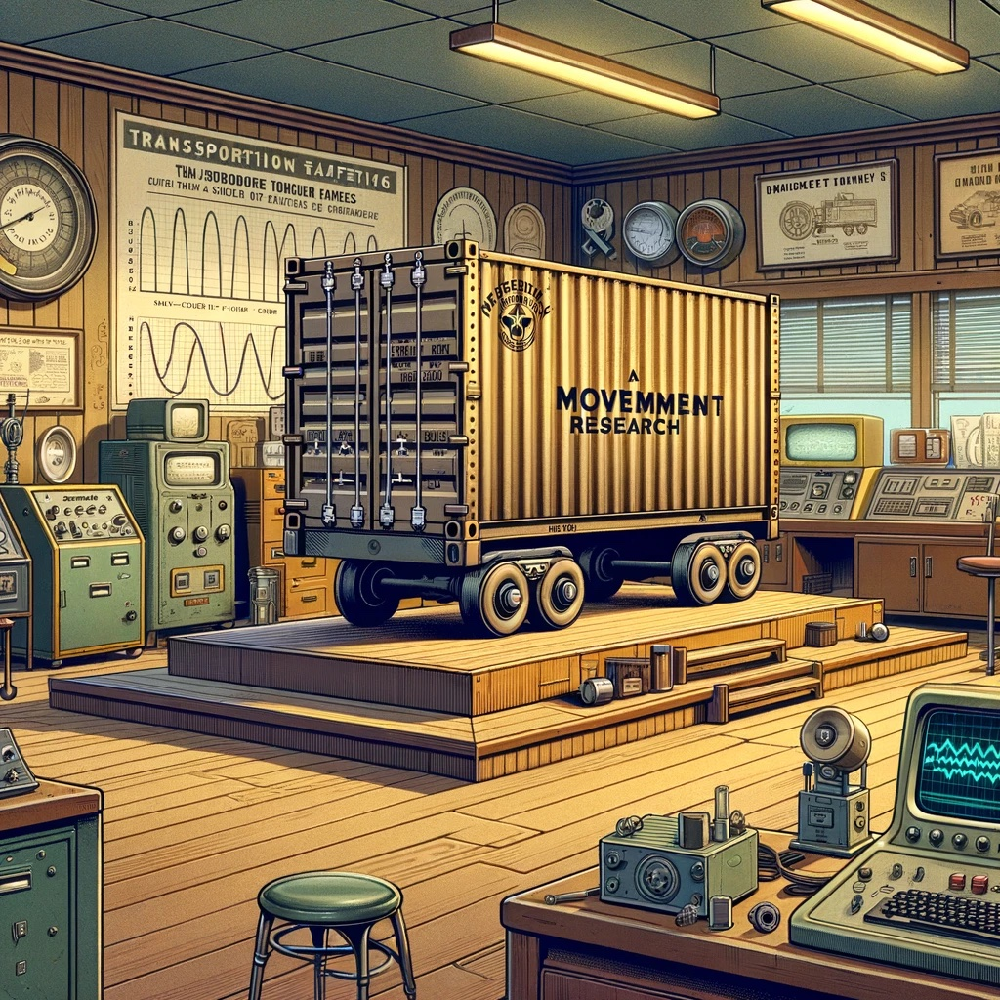
Introduction
Transportation is the backbone of global commerce. Millions of containers are transported daily via various means, such as ships, trucks, and trains, to destinations worldwide. Ensuring these containers’ safe and efficient transit is a monumental task that requires leveraging modern technology, and TinyML is undoubtedly one of them.
In this hands-on tutorial, we will work to solve real-world problems related to transportation. We will develop a Motion Classification and Anomaly Detection system using the Arduino Nicla Vision board, the Arduino IDE, and the Edge Impulse Studio. This project will help us understand how containers experience different forces and motions during various phases of transportation, such as terrestrial and maritime transit, vertical movement via forklifts, and stationary periods in warehouses.
- Setting up the Arduino Nicla Vision Board
- Data Collection and Preprocessing
- Building the Motion Classification Model
- Implementing Anomaly Detection
- Real-world Testing and Analysis
By the end of this tutorial, you’ll have a working prototype that can classify different types of motion and detect anomalies during the transportation of containers. This knowledge can be a stepping stone to more advanced projects in the burgeoning field of TinyML involving vibration.
IMU Installation and testing
For this project, we will use an accelerometer. As discussed in the Hands-On Tutorial, Setup Nicla Vision, the Nicla Vision Board has an onboard 6-axis IMU: 3D gyroscope and 3D accelerometer, the LSM6DSOX. Let’s verify if the LSM6DSOX IMU library is installed. If not, install it.

Next, go to Examples > Arduino_LSM6DSOX > SimpleAccelerometer and run the accelerometer test. You can check if it works by opening the IDE Serial Monitor or Plotter. The values are in g (earth gravity), with a default range of +/- 4g:
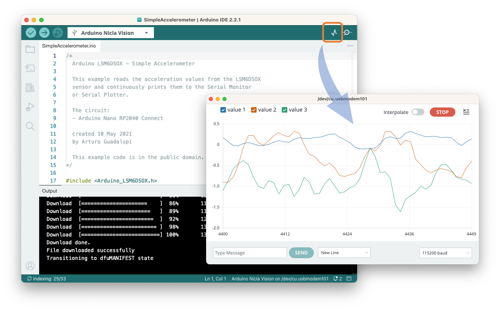
Defining the Sampling frequency:
Choosing an appropriate sampling frequency is crucial for capturing the motion characteristics you’re interested in studying. The Nyquist-Shannon sampling theorem states that the sampling rate should be at least twice the highest frequency component in the signal to reconstruct it properly. In the context of motion classification and anomaly detection for transportation, the choice of sampling frequency would depend on several factors:
Nature of the Motion: Different types of transportation (terrestrial, maritime, etc.) may involve different ranges of motion frequencies. Faster movements may require higher sampling frequencies.
Hardware Limitations: The Arduino Nicla Vision board and any associated sensors may have limitations on how fast they can sample data.
Computational Resources: Higher sampling rates will generate more data, which might be computationally intensive, especially critical in a TinyML environment.
Battery Life: A higher sampling rate will consume more power. If the system is battery-operated, this is an important consideration.
Data Storage: More frequent sampling will require more storage space, another crucial consideration for embedded systems with limited memory.
In many human activity recognition tasks, sampling rates of around 50 Hz to 100 Hz are commonly used. Given that we are simulating transportation scenarios, which are generally not high-frequency events, a sampling rate in that range (50-100 Hz) might be a reasonable starting point.
Let’s define a sketch that will allow us to capture our data with a defined sampling frequency (for example, 50Hz):
/*
* Based on Edge Impulse Data Forwarder Example (Arduino)
- https://docs.edgeimpulse.com/docs/cli-data-forwarder
* Developed by M.Rovai @11May23
*/
/* Include ----------------------------------------------------------------- */
#include <Arduino_LSM6DSOX.h>
/* Constant defines -------------------------------------------------------- */
#define CONVERT_G_TO_MS2 9.80665f
#define FREQUENCY_HZ 50
#define INTERVAL_MS (1000 / (FREQUENCY_HZ + 1))
static unsigned long last_interval_ms = 0;
float x, y, z;
void setup() {
Serial.begin(9600);
while (!Serial);
if (!IMU.begin()) {
Serial.println("Failed to initialize IMU!");
while (1);
}
}
void loop() {
if (millis() > last_interval_ms + INTERVAL_MS) {
last_interval_ms = millis();
if (IMU.accelerationAvailable()) {
// Read raw acceleration measurements from the device
IMU.readAcceleration(x, y, z);
// converting to m/s2
float ax_m_s2 = x * CONVERT_G_TO_MS2;
float ay_m_s2 = y * CONVERT_G_TO_MS2;
float az_m_s2 = z * CONVERT_G_TO_MS2;
Serial.print(ax_m_s2);
Serial.print("\t");
Serial.print(ay_m_s2);
Serial.print("\t");
Serial.println(az_m_s2);
}
}
}Uploading the sketch and inspecting the Serial Monitor, we can see that we are capturing 50 samples per second.
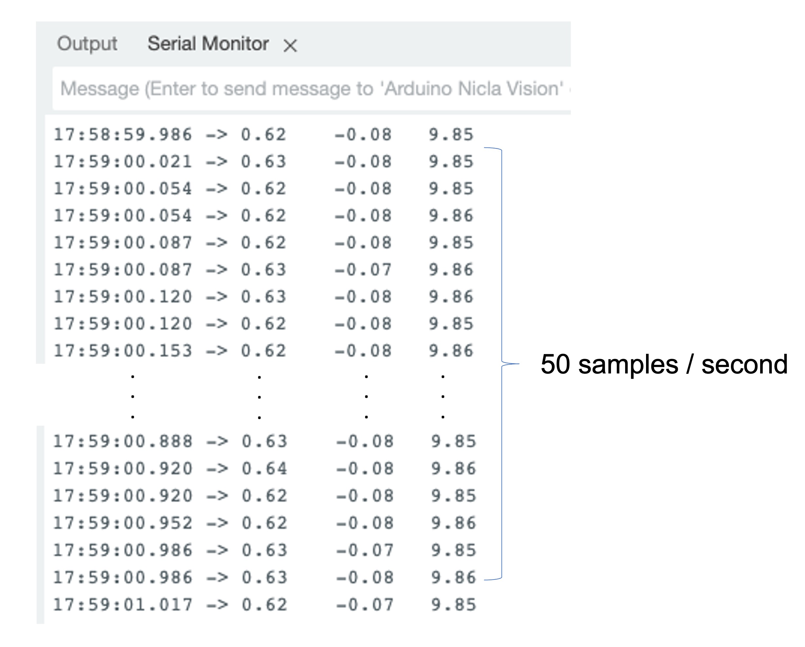
Note that with the Nicla board resting on a table (with the camera facing down), the z-axis measures around 9.8m/s\(^2\), the expected earth acceleration.
The Case Study: Simulated Container Transportation
We will simulate container (or better package) transportation through different scenarios to make this tutorial more relatable and practical. Using the built-in accelerometer of the Arduino Nicla Vision board, we’ll capture motion data by manually simulating the conditions of:
- Terrestrial Transportation (by road or train)
- Maritime-associated Transportation
- Vertical Movement via Fork-Lift
- Stationary (Idle) period in a Warehouse
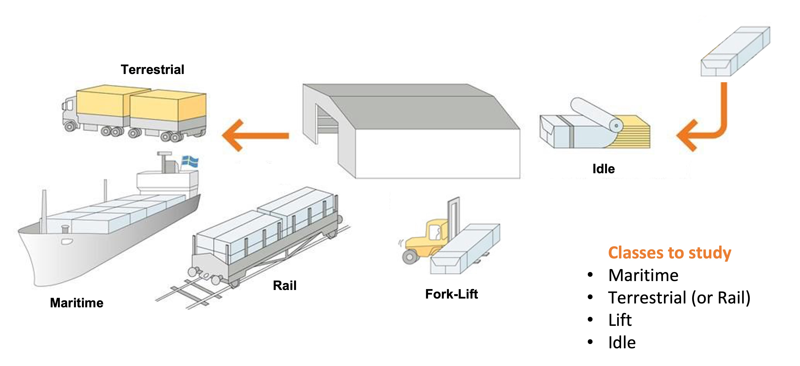
From the above images, we can define for our simulation that primarily horizontal movements (x or y axis) should be associated with the “Terrestrial class,” Vertical movements (z-axis) with the “Lift Class,” no activity with the “Idle class,” and movement on all three axes to Maritime class.
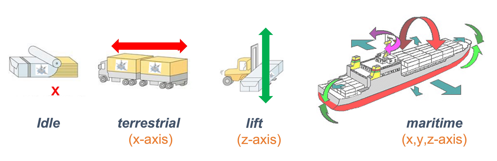
Data Collection
For data collection, we can have several options. In a real case, we can have our device, for example, connected directly to one container, and the data collected on a file (for example .CSV) and stored on an SD card (Via SPI connection) or an offline repo in your computer. Data can also be sent remotely to a nearby repository, such as a mobile phone, using Bluetooth (as done in this project: Sensor DataLogger). Once your dataset is collected and stored as a .CSV file, it can be uploaded to the Studio using the CSV Wizard tool.
In this video, you can learn alternative ways to send data to the Edge Impulse Studio.
Connecting the device to Edge Impulse
We will connect the Nicla directly to the Edge Impulse Studio, which will also be used for data pre-processing, model training, testing, and deployment. For that, you have two options:
- Download the latest firmware and connect it directly to the
Data Collectionsection. - Use the CLI Data Forwarder tool to capture sensor data from the sensor and send it to the Studio.
Option 1 is more straightforward, as we saw in the Setup Nicla Vision hands-on, but option 2 will give you more flexibility regarding capturing your data, such as sampling frequency definition. Let’s do it with the last one.
Please create a new project on the Edge Impulse Studio (EIS) and connect the Nicla to it, following these steps:
- Install the Edge Impulse CLI and the Node.js into your computer.
- Upload a sketch for data capture (the one discussed previously in this tutorial).
- Use the CLI Data Forwarder to capture data from the Nicla’s accelerometer and send it to the Studio, as shown in this diagram:
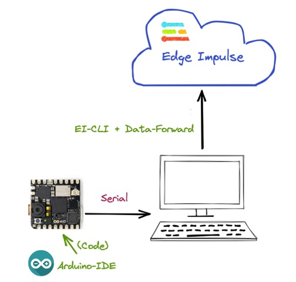
Start the CLI Data Forwarder on your terminal, entering (if it is the first time) the following command:
$ edge-impulse-data-forwarder --cleanNext, enter your EI credentials and choose your project, variables (for example, accX, accY, and accZ), and device name (for example, NiclaV:
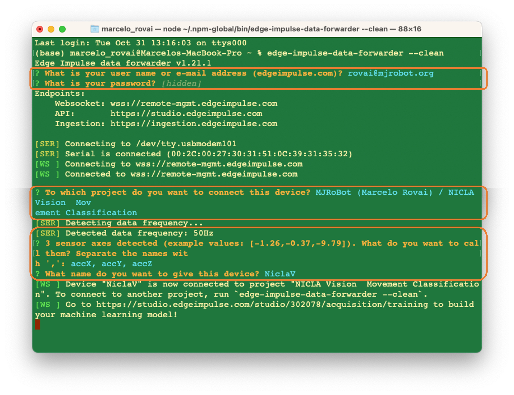
Go to the Devices section on your EI Project and verify if the device is connected (the dot should be green):

You can clone the project developed for this hands-on: NICLA Vision Movement Classification.
Data Collection
On the Data Acquisition section, you should see that your board [NiclaV] is connected. The sensor is available: [sensor with 3 axes (accX, accY, accZ)] with a sampling frequency of [50Hz]. The Studio suggests a sample length of [10000] ms (10s). The last thing left is defining the sample label. Let’s start with[terrestrial]:
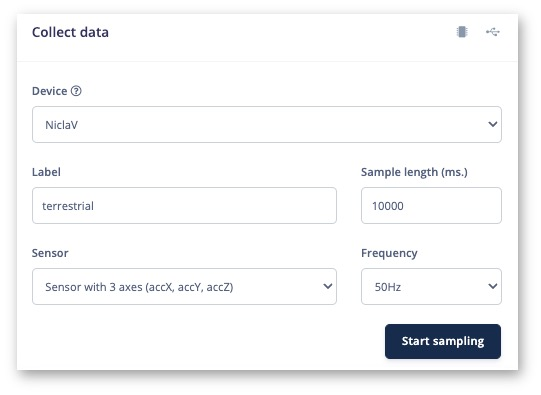
Terrestrial (palettes in a Truck or Train), moving horizontally. Press [Start Sample]and move your device horizontally, keeping one direction over your table. After 10 s, your data will be uploaded to the studio. Here is how the sample was collected:
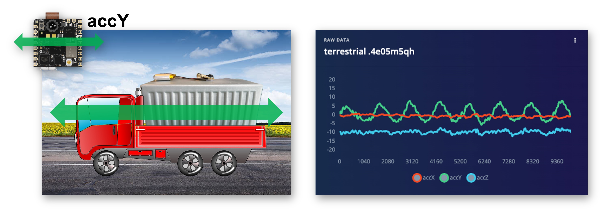
As expected, the movement was captured mainly in the Y-axis (green). In the blue, we see the Z axis, around -10 m/s\(^2\) (the Nicla has the camera facing up).
As discussed before, we should capture data from all four Transportation Classes. So, imagine that you have a container with a built-in accelerometer facing the following situations:
Maritime (pallets in boats into an angry ocean). The movement is captured on all three axes:

Lift (Palettes being handled vertically by a Forklift). Movement captured only in the Z-axis:
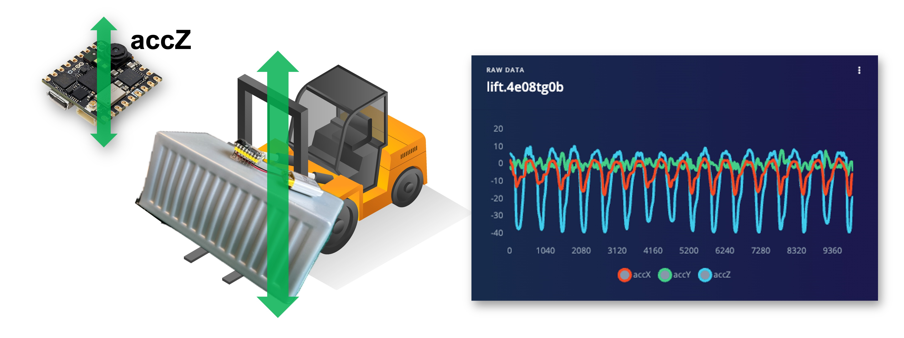
Idle (Paletts in a warehouse). No movement detected by the accelerometer:
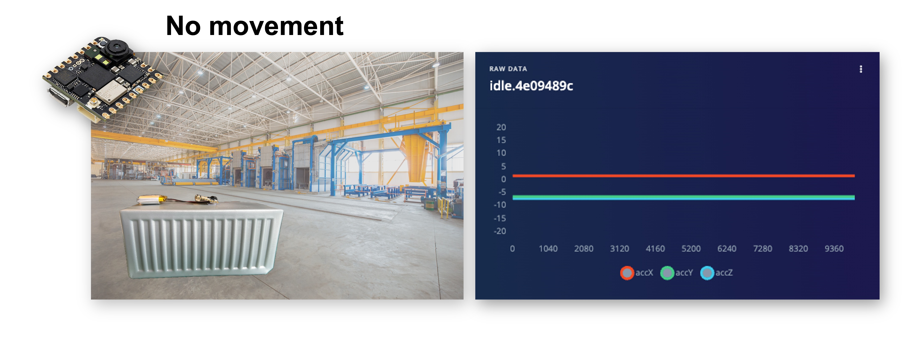
You can capture, for example, 2 minutes (twelve samples of 10 seconds) for each of the four classes (a total of 8 minutes of data). Using the three dots menu after each one of the samples, select 2 of them, reserving them for the Test set. Alternatively, you can use the automatic Train/Test Split tool on the Danger Zone of Dashboard tab. Below, you can see the resulting dataset:
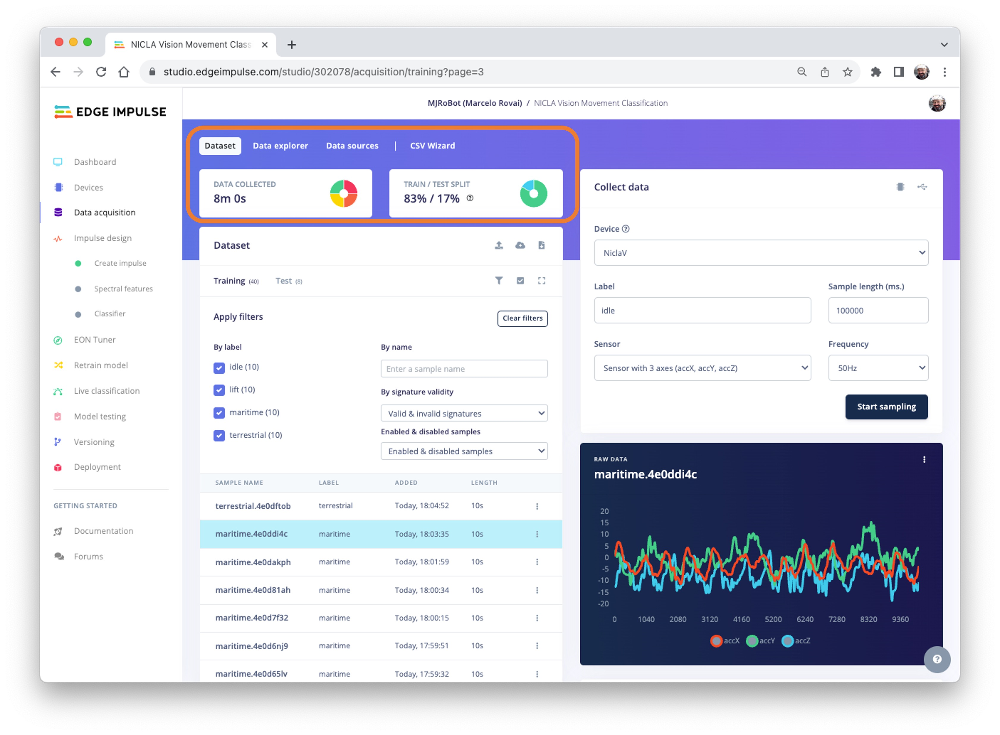
Once you have captured your dataset, you can explore it in more detail using the Data Explorer, a visual tool to find outliers or mislabeled data (helping to correct them). The data explorer first tries to extract meaningful features from your data (by applying signal processing and neural network embeddings) and then uses a dimensionality reduction algorithm such as PCA or t-SNE to map these features to a 2D space. This gives you a one-look overview of your complete dataset.
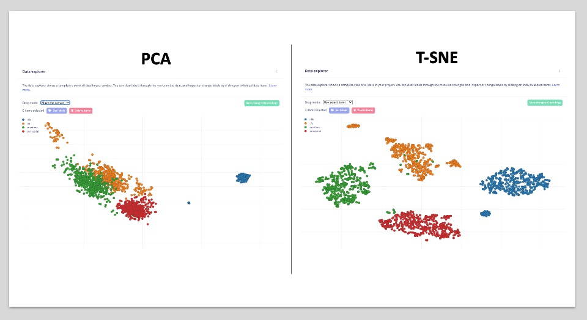
In our case, the dataset seems OK (good separation). But the PCA shows we can have issues between maritime (green) and lift (orange). This is expected, once on a boat, sometimes the movement can be only “vertical”.
Impulse Design
The next step is the definition of our Impulse, which takes the raw data and uses signal processing to extract features, passing them as the input tensor of a learning block to classify new data. Go to Impulse Design and Create Impulse. The Studio will suggest the basic design. Let’s also add a second Learning Block for Anomaly Detection.

This second model uses a K-means model. If we imagine that we could have our known classes as clusters, any sample that could not fit on that could be an outlier, an anomaly such as a container rolling out of a ship on the ocean or falling from a Forklift.
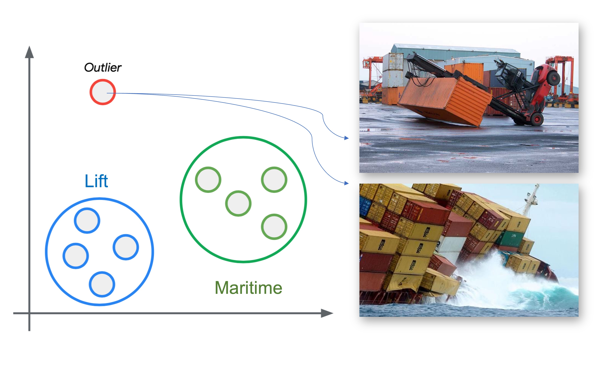
The sampling frequency should be automatically captured, if not, enter it: [50]Hz. The Studio suggests a Window Size of 2 seconds ([2000] ms) with a sliding window of [20]ms. What we are defining in this step is that we will pre-process the captured data (Time-Seres data), creating a tabular dataset features) that will be the input for a Neural Networks Classifier (DNN) and an Anomaly Detection model (K-Means), as shown below:
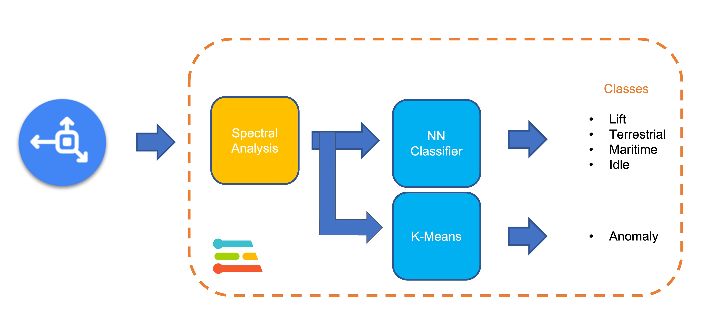
Let’s dig into those steps and parameters to understand better what we are doing here.
Data Pre-Processing Overview
Data pre-processing is extracting features from the dataset captured with the accelerometer, which involves processing and analyzing the raw data. Accelerometers measure the acceleration of an object along one or more axes (typically three, denoted as X, Y, and Z). These measurements can be used to understand various aspects of the object’s motion, such as movement patterns and vibrations.
Raw accelerometer data can be noisy and contain errors or irrelevant information. Preprocessing steps, such as filtering and normalization, can clean and standardize the data, making it more suitable for feature extraction. In our case, we should divide the data into smaller segments or windows. This can help focus on specific events or activities within the dataset, making feature extraction more manageable and meaningful. The window size and overlap (window increase) choice depend on the application and the frequency of the events of interest. As a thumb rule, we should try to capture a couple of “cycles of data”.
With a sampling rate (SR) of 50Hz and a window size of 2 seconds, we will get 100 samples per axis, or 300 in total (3 axis x 2 seconds x 50 samples). We will slide this window every 200ms, creating a larger dataset where each instance has 300 raw features.
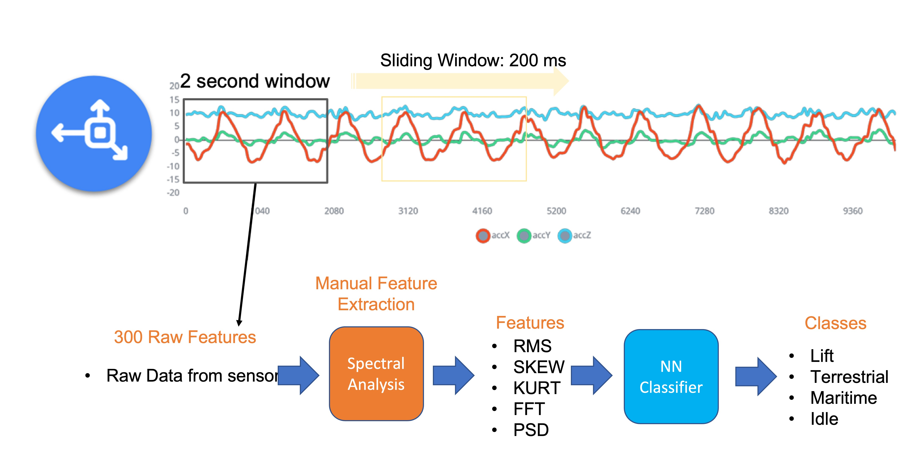
Once the data is preprocessed and segmented, you can extract features that describe the motion’s characteristics. Some typical features extracted from accelerometer data include:
- Time-domain features describe the data’s statistical properties within each segment, such as mean, median, standard deviation, skewness, kurtosis, and zero-crossing rate.
- Frequency-domain features are obtained by transforming the data into the frequency domain using techniques like the Fast Fourier Transform (FFT). Some typical frequency-domain features include the power spectrum, spectral energy, dominant frequencies (amplitude and frequency), and spectral entropy.
- Time-frequency domain features combine the time and frequency domain information, such as the Short-Time Fourier Transform (STFT) or the Discrete Wavelet Transform (DWT). They can provide a more detailed understanding of how the signal’s frequency content changes over time.
In many cases, the number of extracted features can be large, which may lead to overfitting or increased computational complexity. Feature selection techniques, such as mutual information, correlation-based methods, or principal component analysis (PCA), can help identify the most relevant features for a given application and reduce the dimensionality of the dataset. The Studio can help with such feature importance calculations.
EI Studio Spectral Features
Data preprocessing is a challenging area for embedded machine learning, still, Edge Impulse helps overcome this with its digital signal processing (DSP) preprocessing step and, more specifically, the Spectral Features Block.
On the Studio, the collected raw dataset will be the input of a Spectral Analysis block, which is excellent for analyzing repetitive motion, such as data from accelerometers. This block will perform a DSP (Digital Signal Processing), extracting features such as FFT or Wavelets.
For our project, once the time signal is continuous, we should use FFT with, for example, a length of [32].
The per axis/channel Time Domain Statistical features are:
The per axis/channel Frequency Domain Spectral features are:
- Spectral Power: 16 features (FFT Length/2)
- Skewness: 1 feature
- Kurtosis: 1 feature
So, for an FFT length of 32 points, the resulting output of the Spectral Analysis Block will be 21 features per axis (a total of 63 features).
You can learn more about how each feature is calculated by downloading the notebook Edge Impulse - Spectral Features Block Analysis TinyML under the hood: Spectral Analysis or opening it directly on Google CoLab.
Generating features
Once we understand what the pre-processing does, it is time to finish the job. So, let’s take the raw data (time-series type) and convert it to tabular data. For that, go to the Spectral Features section on the Parameters tab, define the main parameters as discussed in the previous section ([FFT] with [32] points), and select[Save Parameters]:
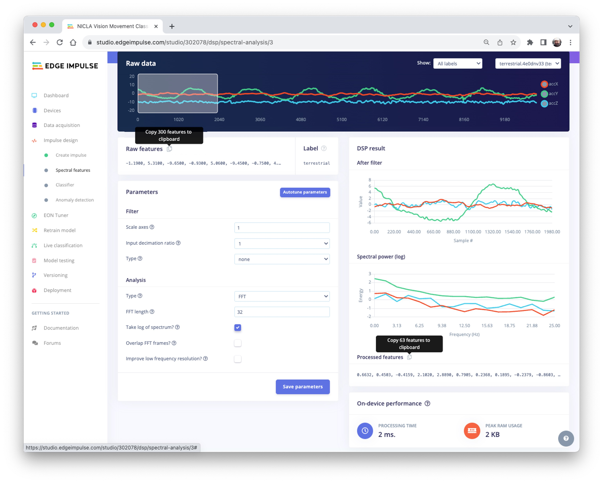
At the top menu, select the Generate Features option and the Generate Features button. Each 2-second window data will be converted into one data point of 63 features.
The Feature Explorer will show those data in 2D using UMAP. Uniform Manifold Approximation and Projection (UMAP) is a dimension reduction technique that can be used for visualization similarly to t-SNE but is also applicable for general non-linear dimension reduction.
The visualization makes it possible to verify that after the feature generation, the classes present keep their excellent separation, which indicates that the classifier should work well. Optionally, you can analyze how important each one of the features is for one class compared with others.
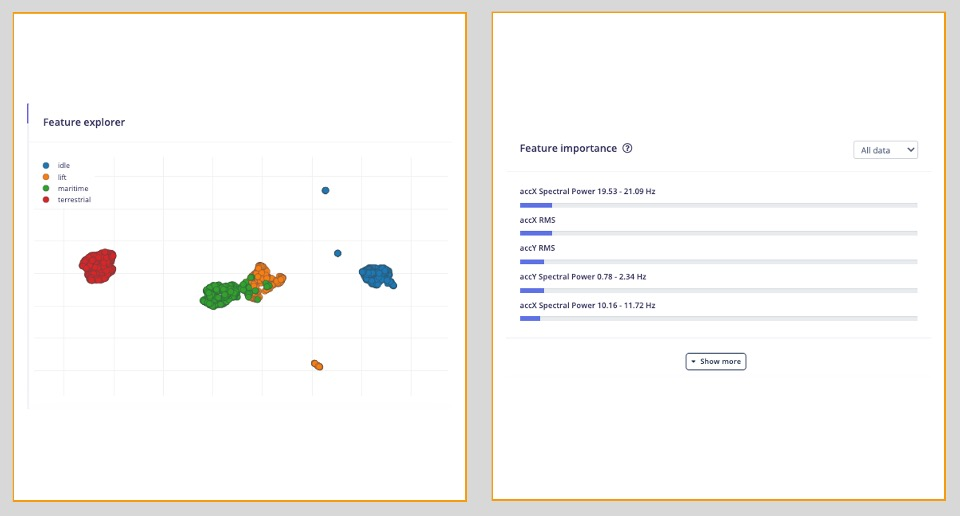
Models Training
Our classifier will be a Dense Neural Network (DNN) that will have 63 neurons on its input layer, two hidden layers with 20 and 10 neurons, and an output layer with four neurons (one per each class), as shown here:
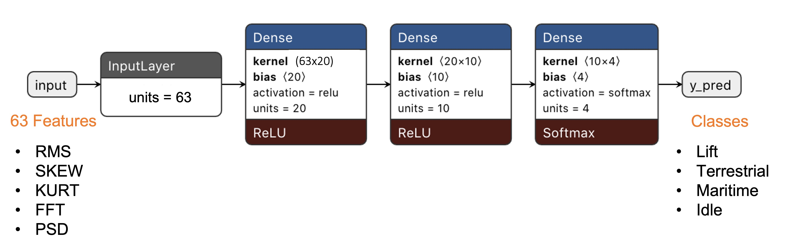
As hyperparameters, we will use a Learning Rate of [0.005], a Batch size of [32], and [20]% of data for validation for [30] epochs. After training, we can see that the accuracy is 98.5%. The cost of memory and latency is meager.
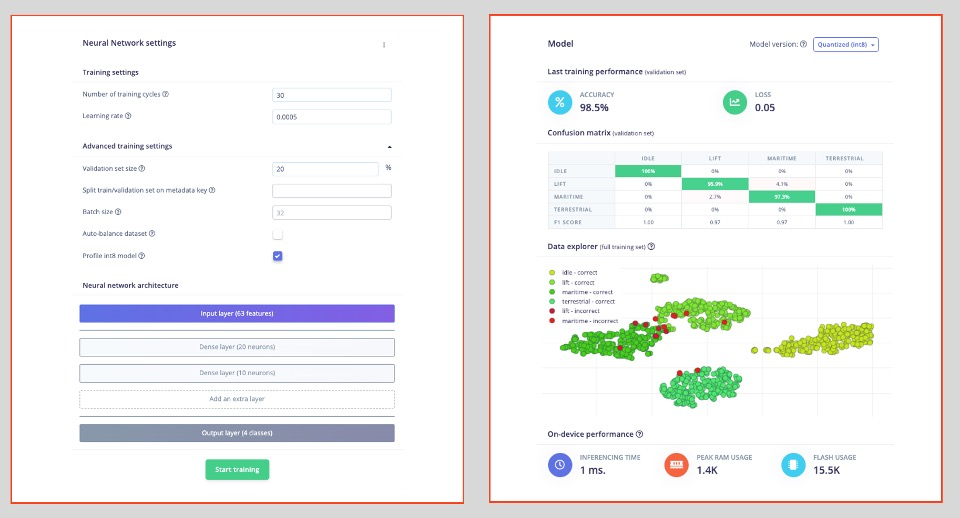
For Anomaly Detection, we will choose the suggested features that are precisely the most important ones in the Feature Extraction, plus the accZ RMS. The number of clusters will be [32], as suggested by the Studio:

Testing
We can verify how our model will behave with unknown data using 20% of the data left behind during the data capture phase. The result was almost 95%, which is good. You can always work to improve the results, for example, to understand what went wrong with one of the wrong results. If it is a unique situation, you can add it to the training dataset and then repeat it.
The default minimum threshold for a considered uncertain result is [0.6] for classification and [0.3] for anomaly. Once we have four classes (their output sum should be 1.0), you can also set up a lower threshold for a class to be considered valid (for example, 0.4). You can Set confidence thresholds on the three dots menu, besides the Classy all button.
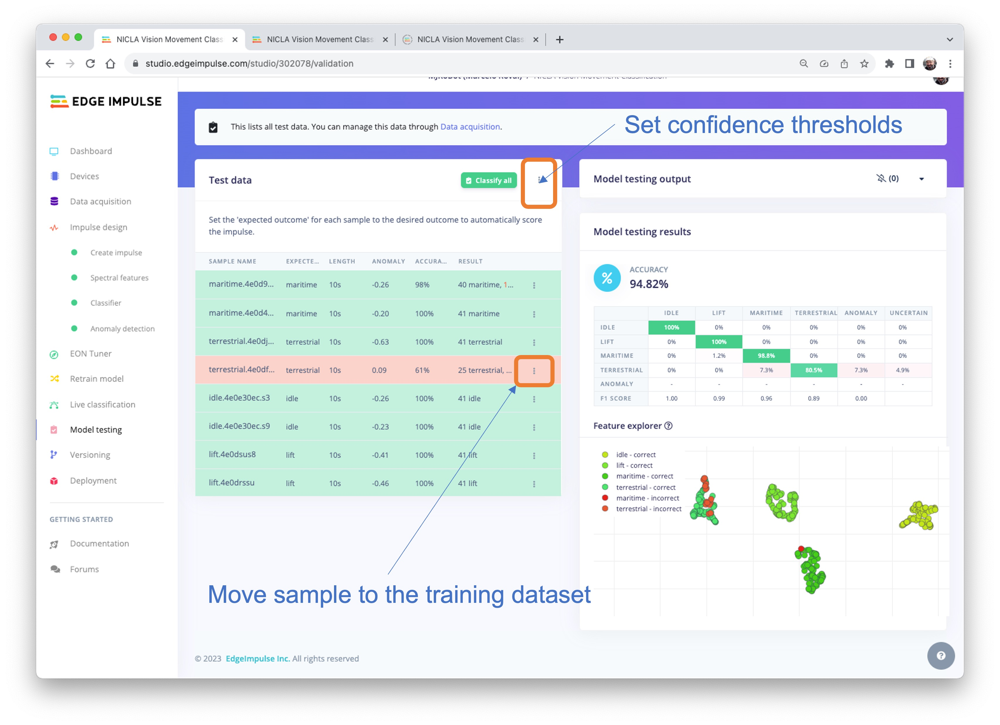
You can also perform Live Classification with your device (which should still be connected to the Studio).
Be aware that here, you will capture real data with your device and upload it to the Studio, where an inference will be taken using the trained model (But the model is NOT in your device).
Deploy
It is time to deploy the preprocessing block and the trained model to the Nicla. The Studio will package all the needed libraries, preprocessing functions, and trained models, downloading them to your computer. You should select the option Arduino Library, and at the bottom, you can choose Quantized (Int8) or Unoptimized (float32) and [Build]. A Zip file will be created and downloaded to your computer.
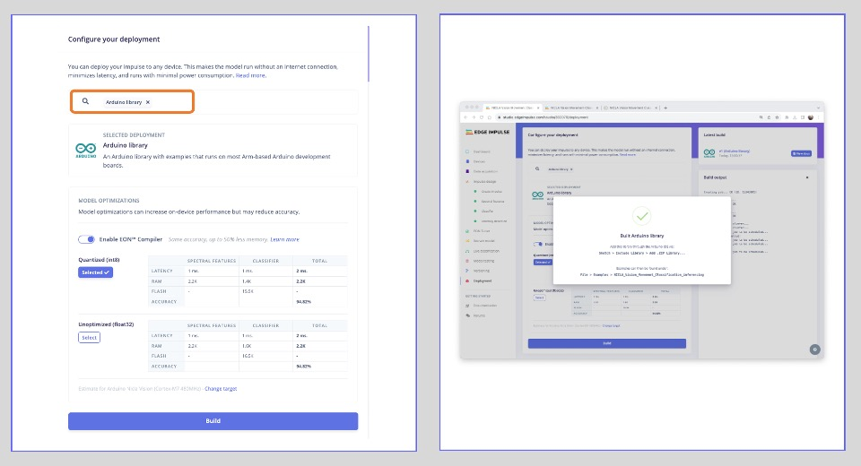
On your Arduino IDE, go to the Sketch tab, select Add.ZIP Library, and Choose the.zip file downloaded by the Studio. A message will appear in the IDE Terminal: Library installed.
Inference
Now, it is time for a real test. We will make inferences wholly disconnected from the Studio. Let’s change one of the code examples created when you deploy the Arduino Library.
In your Arduino IDE, go to the File/Examples tab and look for your project, and on examples, select Nicla_vision_fusion:
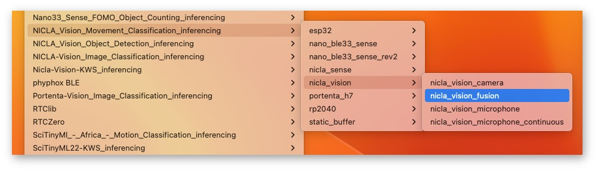
Note that the code created by Edge Impulse considers a sensor fusion approach where the IMU (Accelerometer and Gyroscope) and the ToF are used. At the beginning of the code, you have the libraries related to our project, IMU and ToF:
/* Includes ---------------------------------------------------------------- */
#include <NICLA_Vision_Movement_Classification_inferencing.h>
#include <Arduino_LSM6DSOX.h> //IMU
#include "VL53L1X.h" // ToFYou can keep the code this way for testing because the trained model will use only features pre-processed from the accelerometer. But consider that you will write your code only with the needed libraries for a real project.
And that is it!
You can now upload the code to your device and proceed with the inferences. Press the Nicla [RESET] button twice to put it on boot mode (disconnect from the Studio if it is still connected), and upload the sketch to your board.
Now you should try different movements with your board (similar to those done during data capture), observing the inference result of each class on the Serial Monitor:
- Idle and lift classes:
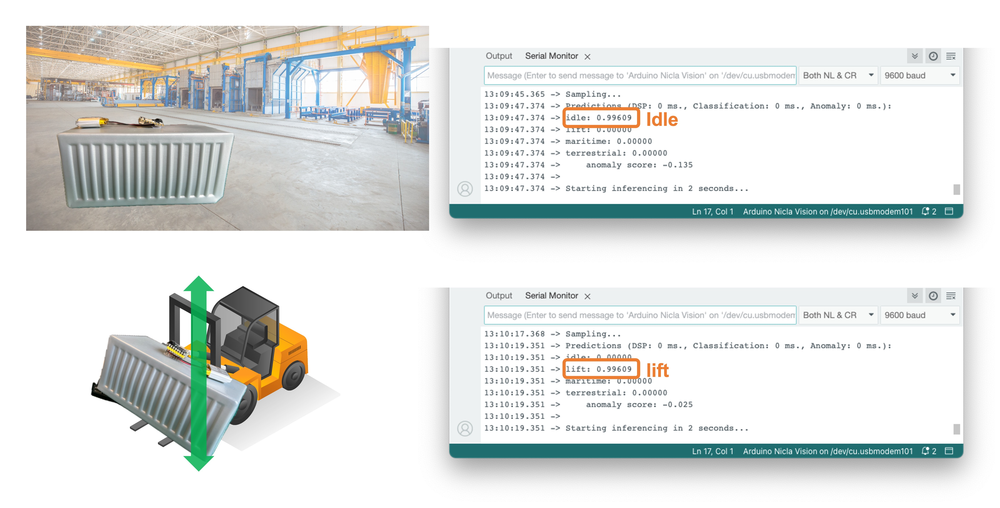
- maritime and terrestrial:
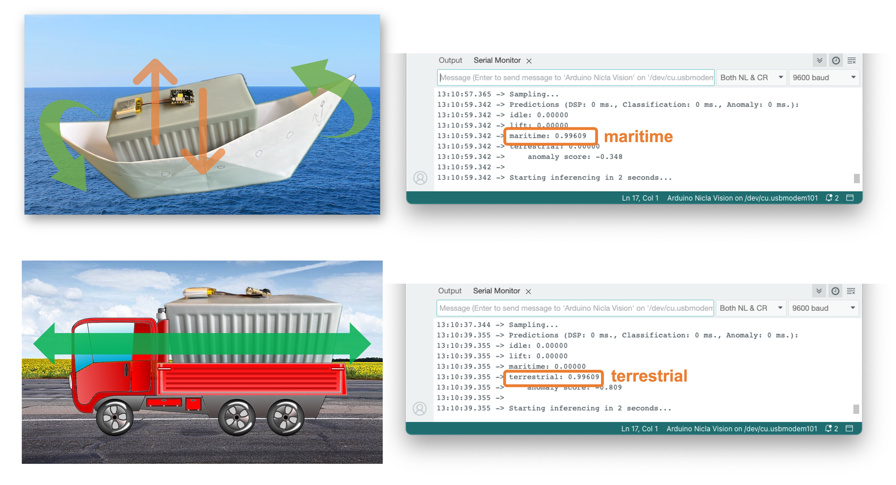
Note that in all situations above, the value of the anomaly score was smaller than 0.0. Try a new movement that was not part of the original dataset, for example, “rolling” the Nicla, facing the camera upside-down, as a container falling from a boat or even a boat accident:
- anomaly detection:
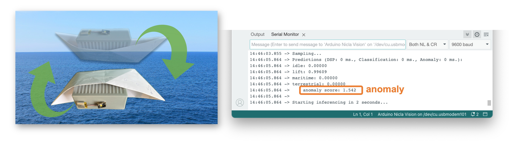
In this case, the anomaly is much bigger, over 1.00
Post-processing
Now that we know the model is working since it detects the movements, we suggest that you modify the code to see the result with the NiclaV completely offline (disconnected from the PC and powered by a battery, a power bank, or an independent 5V power supply).
The idea is to do the same as with the KWS project: if one specific movement is detected, a specific LED could be lit. For example, if terrestrial is detected, the Green LED will light; if maritime, the Red LED will light, if it is a lift, the Blue LED will light; and if no movement is detected (idle), the LEDs will be OFF. You can also add a condition when an anomaly is detected, in this case, for example, a white color can be used (all e LEDs light simultaneously).
Conclusion
The notebooks and codes used in this hands-on tutorial will be found on the GitHub repository.
Before we finish, consider that Movement Classification and Object Detection can be utilized in many applications across various domains. Here are some of the potential applications:
Case Applications
Industrial and Manufacturing
- Predictive Maintenance: Detecting anomalies in machinery motion to predict failures before they occur.
- Quality Control: Monitoring the motion of assembly lines or robotic arms for precision assessment and deviation detection from the standard motion pattern.
- Warehouse Logistics: Managing and tracking the movement of goods with automated systems that classify different types of motion and detect anomalies in handling.
Healthcare
- Patient Monitoring: Detecting falls or abnormal movements in the elderly or those with mobility issues.
- Rehabilitation: Monitoring the progress of patients recovering from injuries by classifying motion patterns during physical therapy sessions.
- Activity Recognition: Classifying types of physical activity for fitness applications or patient monitoring.
Consumer Electronics
- Gesture Control: Interpreting specific motions to control devices, such as turning on lights with a hand wave.
- Gaming: Enhancing gaming experiences with motion-controlled inputs.
Transportation and Logistics
- Vehicle Telematics: Monitoring vehicle motion for unusual behavior such as hard braking, sharp turns, or accidents.
- Cargo Monitoring: Ensuring the integrity of goods during transport by detecting unusual movements that could indicate tampering or mishandling.
Smart Cities and Infrastructure
- Structural Health Monitoring: Detecting vibrations or movements within structures that could indicate potential failures or maintenance needs.
- Traffic Management: Analyzing the flow of pedestrians or vehicles to improve urban mobility and safety.
Security and Surveillance
- Intruder Detection: Detecting motion patterns typical of unauthorized access or other security breaches.
- Wildlife Monitoring: Detecting poachers or abnormal animal movements in protected areas.
Agriculture
- Equipment Monitoring: Tracking the performance and usage of agricultural machinery.
- Animal Behavior Analysis: Monitoring livestock movements to detect behaviors indicating health issues or stress.
Environmental Monitoring
- Seismic Activity: Detecting irregular motion patterns that precede earthquakes or other geologically relevant events.
- Oceanography: Studying wave patterns or marine movements for research and safety purposes.
Nicla 3D case
For real applications, as some described before, we can add a case to our device, and Eoin Jordan, from Edge Impulse, developed a great wearable and machine health case for the Nicla range of boards. It works with a 10mm magnet, 2M screws, and a 16mm strap for human and machine health use case scenarios. Here is the link: Arduino Nicla Voice and Vision Wearable Case.
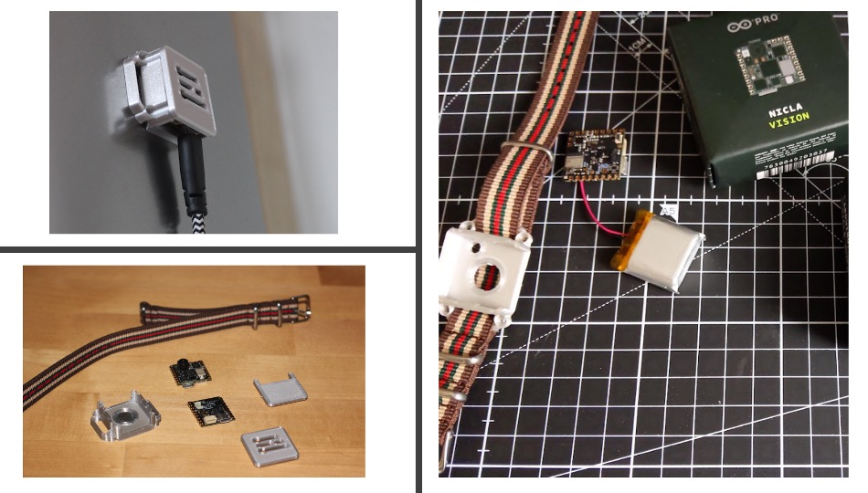
The applications for motion classification and anomaly detection are extensive, and the Arduino Nicla Vision is well-suited for scenarios where low power consumption and edge processing are advantageous. Its small form factor and efficiency in processing make it an ideal choice for deploying portable and remote applications where real-time processing is crucial and connectivity may be limited.